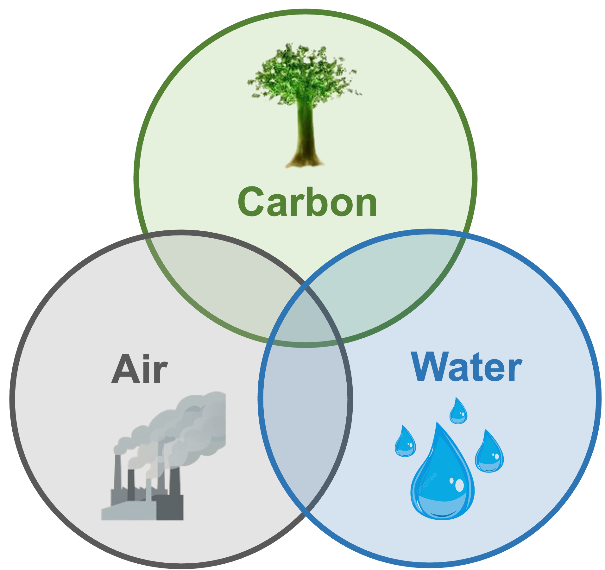
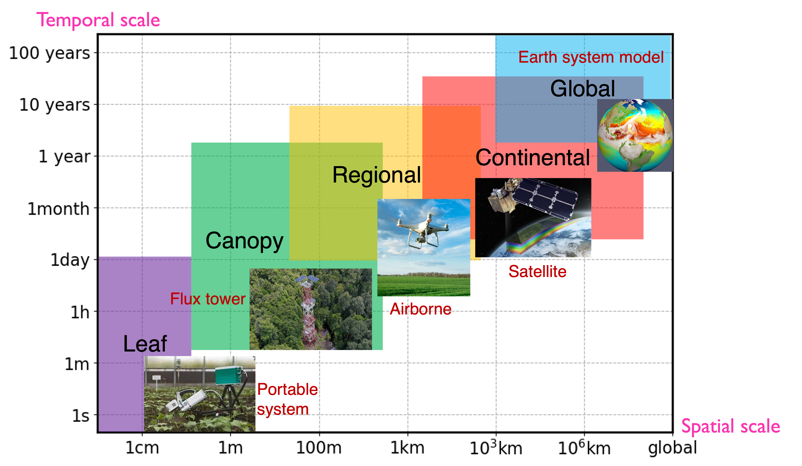

Research areas
My research explores the complex relationships among Carbon-Air-Water in the face of climate change, elevated atmospheric CO2, air pollution, and different management practices. I use an integrated earth-system framework to study terrestrial ecology that connects:
- Plant Ecology (Terrestrial Carbon Cycle)
- Climatology (Air Quality and Climate)
- Hydrology (Water Resources)

My work encompasses a wide range of scales—from the micro-level interactions within individual plants to macro-level regional and global patterns. Across different scales, I use different sensing technologies, including leaf gas-exchange system, eddy covariance measurements, and ground/airborne/satellite remote sensing. The knowledge gained from these data-driven approaches are crucial for improving ecosystem models and calibrating parameters, enabling more accurate predictions of ecosystem trajectories under climate change. These scientific insights will be leveraged to empower policymakers and stakeholders to develop more effective and targeted strategies for climate adaptation and mitigation.

Topic 1: Cross-Scale Sensing of Photosynthesis and Crop Yields
I developed a novel framework using satellite-derived solar-induced chlorophyll fluorescence (SIF) to estimate crop yield. While traditional vegetation indices like the Normalized Difference Vegetation Index (NDVI) can track plant growth, they often saturate in cropland and are not sensitive to short-term environmental stressors like flash droughts. In contrast, SIF—emitted near-infrared light from chlorophyll a molecules—serves as a more direct physiological indicator of photosynthesis. My research has demonstrated a robust correlation between satellite SIF and USDA-reported county-level crop yield. This work underscores the promise of SIF as a robust and cost-effective tool for real-time crop yield monitoring at regional to global scales.
Topic 2: Climate–Vegetation–Carbon Cycle Feedbacks
An increase in the seasonal cycle amplitude (SCA) of CO2 since the 1960s has been observed in the Northern Hemisphere (NH). However, dominant drivers of the amplified CO2 seasonality are still debated. I employed satellite-based remote sensing observations to track spatial and temporal changes in global photosynthesis of different vegetation types. Then, a state-of-art atmospheric transport model is used to examine whether our bottom-up estimates of ecosystem fluxes can capture the observed CO2 SCA trends at multiple surface sites. Further, we explore dominant drivers of the observed CO2 SCA trends across different locations of sites. This work links long-term satellite remote sensing observations with ground atmospheric CO2 measurements across the NH to explore how terrestrial carbon fluxes shape and change spatiotemporal pattern of atmospheric CO2.
Topic 3: Impact of Air Quality on Terrestrial Carbon Uptake and Crop Yields
I investigated the influence of anthropogenic aerosols on plant photosynthesis and crop yields. While aerosols are known to affect photosynthesis through scattering and absorbing solar radiation, the exact effects at continental scales remain highly uncertain. I leveraged daily satellite SIF observations, which is mechanistically linked to plant photosynthesis, to explore the effects of aerosols on photosynthesis. My results revealed that 64% of regions in Europe show increased SIF on weekends compared to weekdays, when there is more plant-available sunlight due to reduced particulate pollution sourced from human and industrial activities. This suggests mitigating particulate pollution could enhance photosynthesis and ecosystem productivity in light-limited ecosystems. This work, for the first time, assesses human impacts on photosynthesis via aerosol pollution using satellite observations.
Topic 4: Food Security and Adaptation to Climate Change
I studied the role of irrigation in enhancing agricultural resilience and mitigating crop yield losses under future warming. Significant reductions in crop yields have been observed and will intensify due to the increased frequency and intensity of droughts and heatwaves under warming. Irrigation improves crop yield stability through providing water supply and evapotranspiration cooling. Using global historical crop and climate observations, climate models and agro-hydrological simulations, I estimated the crop yield losses under future warming and assessed how much irrigation expansion we need to mitigate yield losses under future warming.
Looking forward, I am interested in integrating process-based models, satellite remote sensing, and machine learning approaches to examine the interconnected factors that influence the spatio-temporal variations in crop yields, and evaluate how different agricultural management practices will affect crop yields, greenhouse gas emissions and soil carbon stocks. These findings will then be used to inform tailored strategies which aims not only to optimize crop yields but also to reduce agriculture’s carbon footprint.
Selected Media Outreach
New Scientist: Plants are more productive on weekends thanks to cleaner air
Stanford Highlights: Improved air quality could enhance natural carbon sequestration by plants
Carnegie Science Highlights: Improved air quality could enhance natural carbon sequestration by plants
Caltech Highlights: Natural-Gas Leaks are Important Source of Greenhouse Gas Emissions in Los Angeles